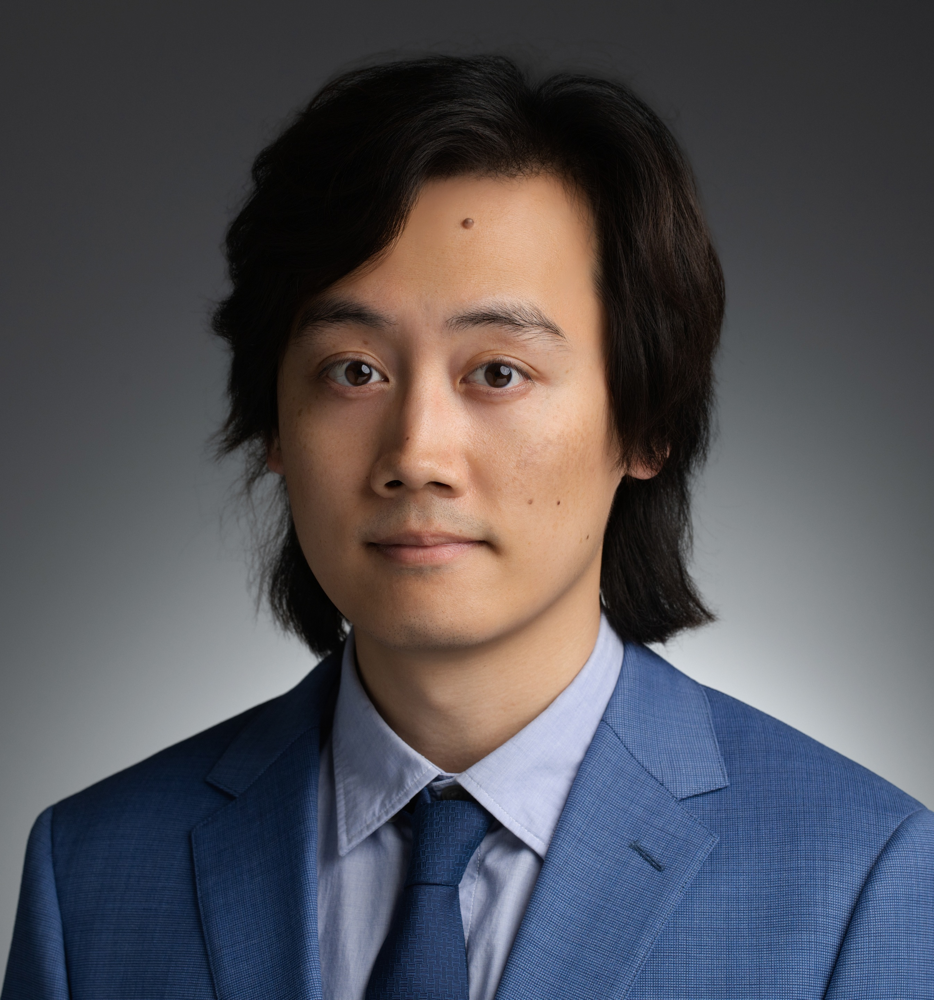

Yafei Dong, Ph.D. (董亚飞)

Associate Research Scientist
Yale Biomedical Imaging Institute
Yale School of Medicine
100 Church St S
New Haven, CT 06519, USA
E-mail:
dongyf43@gmail.com
yafei.dong@yale.edu
About me
I am an Associate Research Scientist at Yale Biomedical Imaging Institute , Yale School of Medicine. Previously, I worked as a Postdoctoral Associate under the mentorship of Prof. Georges El Fakhri (with additional guidance from Thibault Marin, Ph.D. , Chao Ma, Ph.D. , and Kuang Gong, Ph.D. ). Our team relocated from Massachusetts General Hospital and Harvard Medical School in February 2024. My current research focuses on medical image processing using deep learning techniques, with a particular emphasis on positron emission tomography (PET) imaging. My research interests include tumor segmentation, low-dose PET image enhancement, and multi-model image processing. Previously, I received my Ph.D. degree from Zhejiang University under the supervision of Prof. Yanpeng Cao . During my Ph.D., my research focused on signal and image processing for infrared non-destructive testing. My work included pre-processing (image quality enhancement), sub-surface defect detection, sub-surface defect depth estimation, and spatial visualization of defects.
Research Interests
Computer Vision Deep Learning Medical Imaging Infrared Imaging
Work Experience
| Associate Research Scientist, Yale Biomedical Imaging Institute | July 2026 - present |
| Department of Radiology and Biomedical Imaging | |
| Yale School of Medicine, USA | |
| Postdoctoral Associate, Yale Biomedical Imaging Institute | Feb. 2024 - June 2026 |
| Department of Radiology and Biomedical Imaging | |
| Yale School of Medicine, USA | |
| Advisor: Prof. Georges El Fakhri | |
| Postdoctoral Research Fellow, Gordon Center for Medical Imaging | Jan. 2023 - Jan. 2024 |
| Department of Radiology | |
| Massachusetts General Hospital, Harvard Medical School, USA | |
| Advisor: Prof. Georges El Fakhri |
Education
| Ph.D. in Mechanical Manufacturing and Automation | Sept. 2017 - Sept. 2022 |
| Zhejiang University, China | |
| Advisor: Prof. Yanpeng Cao | |
| B.Eng. in Mechanical Engineering | Aug. 2013 - June 2017 |
| University of Science and Technology Beijing, China |
Publications
Journal Papers
-
Li, Z., Shi, Y., Wang, L., Lu, J., Liu, X., Woo, J., ..., Dong, Y., ..., Shi, Y.*, Yu, H.* & Liu, X.* (2025). Deep learning-based non-contrast MRI model for nasopharyngeal carcinoma diagnosis: an end-to-end gadolinium-free solution. npj Digital Medicine. [website]
-
Dong, Y., Marin, T., Zhuo, Y., Najem, E., Beddok, A., Rozenblum, L., ..., Ma, C.* & El Fakhri, G.* (2025). Modeling inter-reader variability in clinical target volume delineation for soft tissue sarcomas using diffusion model. Medical Physics. [website]
-
Dong, Y., Marin, T., Zhuo, Y., Najem, E., Moteabbed, M., Xing, F., ..., Ma, C.* & El Fakhri, G.* (2025). Gross tumor volume confidence maps prediction for soft tissue sarcomas from multi-modality medical images using a diffusion model. Physics and Imaging in Radiation Oncology, 100734. [website]
-
Huang, Y.*, Miyazaki, T., Liu, X., Dong, Y., & Omachi, S. (2025). Texture and noise dual adaptation for infrared image super-resolution. Pattern Recognition, 111449. [website]
-
Yu, B., Ozdemir, S., Dong, Y., Shao, W., Pan, T., Shi, K., & Gong, K.* (2025). Robust whole-body PET image denoising using 3D diffusion models: evaluation across various scanners, tracers, and dose levels. European Journal of Nuclear Medicine and Molecular Imaging, 1-14. [website]
-
Dong, Y., & Gong, K.* (2024). Head and neck tumor segmentation from [18F] F-FDG PET/CT images based on 3D diffusion model. Physics in Medicine and Biology, 69(15), 155001. [website]
-
Zhao, B., Zheng, J., Dong, Y., Shen, N., Yang, J., Cao, Y., & Cao, Y.* (2023). PPI Edge Infused Spatial-Spectral Adaptive Residual Network for Multispectral Filter Array Image Demosaicing. IEEE Transactions on Geoscience and Remote Sensing, 61, 1-14. [website]
-
Dong, Y., Zhao, B., Yang, J., Cao, Y., & Cao, Y.* (2023). Two-stage convolutional neural network for joint removal of sensor noise and background interference in lock-in thermography. NDT & E International, 137, 102816. [website]
-
Yang, J., Liu, F., Dong, Y., Cao, Y., & Cao, Y.* (2022). Multiple-objective optimization of a reconfigurable assembly system via equipment selection and sequence planning. Computers & Industrial Engineering, 172, 108519. [website]
-
Cao, Y., Dong, Y., Wang, F., Yang, J., Cao, Y.*, & Li, X.* (2021). Multi-sensor spatial augmented reality for visualizing the invisible thermal information of 3D objects. Optics and Lasers in Engineering, 145, 106634. [website]
-
Dong, Y., Xia, C., Yang, J., Cao, Y., Cao, Y.*, & Li, X. (2021). Spatio-temporal 3-D residual networks for simultaneous detection and depth estimation of CFRP subsurface defects in lock-in thermography. IEEE Transactions on Industrial Informatics, 18(4), 2571-2581. [website]
-
Cao, Y., Dong, Y., Cao, Y., Yang, J.*, & Yang, M. Y. (2020). Two-stream convolutional neural network for non-destructive subsurface defect detection via similarity comparison of lock-in thermography signals. NDT & E International, 112, 102246. [website]
-
He, Z., Cao, Y.*, Dong, Y., Yang, J., Cao, Y., & Tisse, C. L. (2018). Single-image-based nonuniformity correction of uncooled long-wave infrared detectors: A deep-learning approach. Applied optics, 57(18), D155-D164. [website]
Conference Papers
-
Dong, Y., Marin, T., Grogg, K., Beddok, A., Liu, X., Moteabbed, M., ..., Ma, C.* & El Fakhri, G.* (2026, April). Latent diffusion transformers for 3D head and neck tumor segmentation. In Medical Imaging 2026: Computer-Aided Diagnosis (Vol. 13926, pp. 224-231). SPIE. (Oral) [website]
-
Yu, B., Ozdemir, S., Dong, Y., Shao, W., Shi, K., & Gong, K.* (2024, October). PET Image Denoising Based on 3D Denoising Diffusion Probabilistic Model: Evaluations on Total-Body Datasets. In International Conference on Medical Image Computing and Computer-Assisted Intervention (pp. 541-550). (MICCAI 2024) (Poster) [website]
Conference Abstracts
-
Dong, Y., Jang, S. I., Han, P., Johnson, K. A., Ma, Chao, Fakhri, G. E., Li, Q. and Gong, K.* (2023). Attenuation correction for PET imaging using conditional denoising diffusion probabilistic model. IEEE Medical Imaging Conference (MIC 2023) (Poster) [website]
-
Jang, S. I., Lois, C., Thibault, E., Becker, J. A., Dong, Y., Normandin, M. D., Price J. C., Johnson K. A., Fakhri G. E., & Gong, K.* (2023). TauPETGen: Text-Conditional Tau PET Image Synthesis Based on Latent Diffusion Models. IEEE Medical Imaging Conference (MIC 2023) (Poster) [arXiv]
Note: * indicates the corresponding author.
Full list of publications in Google Scholar .
Academic Service
Reviewer for Journals
IEEE Transactions on Industrial Informatics
IEEE Transactions on Medical Imaging
IEEE Transactions on Radiation and Plasma Medical Sciences
IEEE Transactions on Computational Imaging
IEEE Transactions on Instrumentation and Measurement
Medical Image Analysis
Physics in Medicine and Biology
Medical Physics
Optics and Lasers in Engineering
Infrared Physics and Technology
Journal of X-Ray Science and Technology
Reviewer for Conferences
-
International Conference on Medical Image Computing and Computer Assisted Intervention (MICCAI) 2026